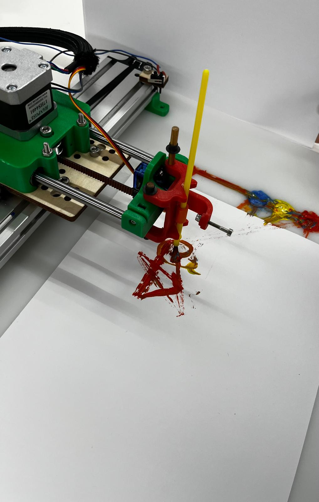

We decided to stick close to the example plotter shown to us in class, and stuck mostly to the kit of parts. our plotter had 2 stepper motors and one servo for the end effector, and 2 belts for the x-y motion mounted onto two metal rails, with 3d printed structural parts. the two stepper motors acted as the pulleys for the belt systems. we ran into a lot of issues with belt tension and also just the mechanics, and ensuring that everything was structurally secure but clean enough to allow full movement. for the end effector, one late night in the lab, we decided to use a paint brush along with the canvas element on the websocket to make - pixelcasso!

a board was cnc'd to rest the machine and paper on, and also have little pots to put the paint on, all within the movement area of the machine. homing switches were added to the end of the two rails so that when the motors hit them, they would stop their movement.
here are snippets of our homing code:
long homeAxisNegative(AccelStepper& m, uint8_t pin) {
m.setMaxSpeed(HOMING_SPEED);
m.setAcceleration(HOMING_ACCEL);
if (digitalRead(pin) == LOW) { // already on switch
m.setCurrentPosition(0);
return 0;
}
m.moveTo(FAR_TARGET);
while (digitalRead(pin) == HIGH) { m.run(); }
m.stop();
while (m.run()) {}
long stepsMoved = -m.currentPosition();
m.setCurrentPosition(0);
return stepsMoved;
}
void homeMachine() {
Serial.println("=== HOMING START ===");
long xs = homeAxisNegative(stepperX, X_ZERO_PIN);
long ys = homeAxisNegative(stepperY, Y_ZERO_PIN);
Serial.print("X steps to zero: "); Serial.println(xs);
Serial.print("Y steps to zero: "); Serial.println(ys);
Serial.println("=== HOMING DONE ===");
}
# drawing machine electronics
# ---------------------------------
we adapted the websockets code and real-time drawing from HTML canvas element given to us to write our code. we had to figure out how to translate the steps the motor takes with the distance it actually moves, and then how that would correspond to the pixels on the canvas element, so that we could have drawings that fit the scale of the machine's actual area.
these were the scaling constants we used:
// scaling constants
#define stepsPerMmX 5.56
#define stepsPerMmY 3.57
#define XReal 120 // mm span corresponding to canvas width
#define YReal 270 // mm span corresponding to canvas height
#define canvasW 400
#define canvasH 550
#define scaleX (float(XReal) / float(canvasW)) // mm per pixel
#define scaleY (float(YReal) / float(canvasH)) // mm per pixel
we also found that the end effector was only moving to points instead of following a smooth line, so we used chatgpt to help us implement smoothing.
void linearMoveSteps(long targetX, long targetY, float feed_steps_per_s = FEED_STEPS_PER_SEC, float accel_steps_per_s2 = ACCEL_STEPS_PER_SEC2) {
long dx = targetX - curXSteps;
long dy = targetY - curYSteps;
long absdx = labs(dx);
long absdy = labs(dy);
long lenSteps = (long) sqrt((double)absdx * absdx + (double)absdy * absdy);
if (lenSteps == 0) return;
float vx = (absdx ? feed_steps_per_s * (float)absdx / (float)lenSteps : 0.0f);
float vy = (absdy ? feed_steps_per_s * (float)absdy / (float)lenSteps : 0.0f);
float ax = (absdx ? accel_steps_per_s2 * (float)absdx / (float)lenSteps : 0.0f);
float ay = (absdy ? accel_steps_per_s2 * (float)absdy / (float)lenSteps : 0.0f);
stepperX.setMaxSpeed(vx);
stepperY.setMaxSpeed(vy);
stepperX.setAcceleration(ax);
stepperY.setAcceleration(ay);
stepperX.moveTo(targetX);
stepperY.moveTo(targetY);
while (stepperX.distanceToGo() != 0 || stepperY.distanceToGo() != 0) {
stepperX.run();
stepperY.run();
}
curXSteps = targetX;
curYSteps = targetY;
}
.
.
.
if (msg.startsWith("SEG:")) {
int c1 = msg.indexOf(',', 4);
int c2 = (c1 == -1) ? -1 : msg.indexOf(',', c1 + 1);
if (c1 != -1 && c2 != -1) {
long px = msg.substring(4, c1).toInt();
long py = msg.substring(c1 + 1, c2).toInt();
int pen = msg.substring(c2 + 1).toInt();
// set pen based on this segment type
penServo.write(pen ? penDownAngle : penUpAngle);
// convert pixel -> mm -> steps
float mmX = px * scaleX;
float mmY = py * scaleY;
long targetX = lround(mmX * stepsPerMmX);
long targetY = lround(mmY * stepsPerMmY);
linearMoveSteps(targetX, targetY); // execute immediately
// let browser send the next point
sendOK();
return;
}
}
}
we then also used chatgpt to combine the html, machine code, and drawing code, as 3 different members of the team had worked on each. overall the code implemented quite well! however, there were some issues with memory, and the machine could not handle drawings that had a large area or that were too complex. the code to include the paint squares on the physical board on the canvas element also did not work out, so one of our members had to memorize where the spot was on the canvas element for our demo.
this was our html code and what our websocket looked like: